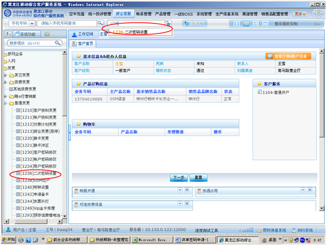

1、进入方式
在“请输入手机号码查询”处输入客户的手机号码，点击查询按钮，点击综合客服-普通变更-二次密码设置，或在“快速转入”处输入代码1236二次密码设置，点击“回车”确定。
2、界面形式及操作步骤说明
（1）在“请输入手机号码查询”处输入客户的手机号码，点击查询按钮，点击综合客服-普通变更-二次密码设置，或在“快速转入”处输入代码1236二次密码设置，点击“回车”确定。

（2）点击“输入”，由客户通过密码小键盘输入服务密码。
（3）在“操作类型”处，点击“申请”。
（4）点击“查询”。
（5）点击“输入”，由客户通过密码小键盘输入“新密码”。
（6）点击“输入”，由客户通过密码小键盘再次输入“确认密码”。
（7）点击“确认”。
（8）显示操作提示，需提示客户“密码申请立即生效，请注意保管密码”，点击“关闭”。
（9）根据客户本次是否办理多个业务，点击“打印”或“合并打印”或“打印存储”。
(10) 点击“确定”提交本次操作。
二次密码设置-修改
1、进入方式
在“请输入手机号码查询”处输入客户的手机号码，点击查询按钮，点击综合客服-普通变更-二次密码设置，或在“快速转入”处输入代码1236二次密码设置，点击“回车”确定。
2、界面形式及操作步骤说明
（1）在“请输入手机号码查询”处输入客户的手机号码，点击查询按钮，点击综合客服-普通变更-二次密码设置，或在“快速转入”处输入代码1236二次密码设置，点击“回车”确定。
（2）点击“输入”，由客户通过密码小键盘输入服务密码。
（3）在“操作类型”处，点击“修改”。
（4）点击“查询”。
（5）点击“输入”，由客户通过密码小键盘输入“原密码”。
（6）点击“输入”，由客户通过密码小键盘输入“新密码”。
（7）点击“输入”，由客户通过密码小键盘再次输入“确认密码”。
（8）点击“确认”。
（9）显示操作提示，需提示客户“二次密码修改立即生效，请注意保管密码”，点击“关闭”。
（10）点击“下一步”。
(11) 点击“确定”提交本次操作。
二次密码设置-重置
一、业务介绍：
即客户对已申请的详单密码进行重新设置的业务。
二、注意事项：
提示客户也可以通过10086客服热线、网上营业厅办理。
三、相关业务规范
需机主本人持有效身份证件 、凭服务密码办理。
四、操作流程图
五、操作界面说明
1、进入方式
在“请输入手机号码查询”处输入客户的手机号码，点击查询按钮，点击综合客服-普通变更-二次密码设置，或在“快速转入”处输入代码1236二次密码设置，点击“回车”确定。
2、界面形式及操作步骤说明
（1）在“请输入手机号码查询”处输入客户的手机号码，点击查询按钮，点击综合客服-普通变更-二次密码设置，或在“快速转入”处输入代码1236二次密码设置，点击“回车”确定。
（2）点击“输入”，由客户通过密码小键盘输入服务密码。
（3）在“操作类型”处，点击“重置”。
（4）点击“查询”。
（5）点击“输入”，由客户通过密码小键盘输入“新密码”。
（6）点击“输入”，由客户通过密码小键盘再次输入“确认密码”。
（7）点击“确认”。
（8）显示操作提示，需提示客户“二次密码重置立即生效，请注意保管密码”，点击“关闭”。
（9）根据客户本次是否办理多个业务，点击“打印”或“合并打印”或“打印存储”。
(10) 点击“确定”提交本次操作。
二次密码设置-取消
1、进入方式
在“请输入手机号码查询”处输入客户的手机号码，点击查询按钮，点击综合客服-普通变更-二次密码设置，或在“快速转入”处输入代码1236二次密码设置，点击“回车”确定。
2、界面形式及操作步骤说明
（1）在“请输入手机号码查询”处输入客户的手机号码，点击查询按钮，点击综合客服-普通变更-二次密码设置，或在“快速转入”处输入代码1236二次密码设置，点击“回车”确定。
（2）点击“输入”，由客户通过密码小键盘输入服务密码。

（3）在“操作类型”处，点击“取消”。
（4）点击“查询”。
（5）点击“确认”。
（6）根据客户本次是否办理多个业务，点击“打印”或“合并打印”或“打印存储”。
(7) 点击“确定”提交本次操作。